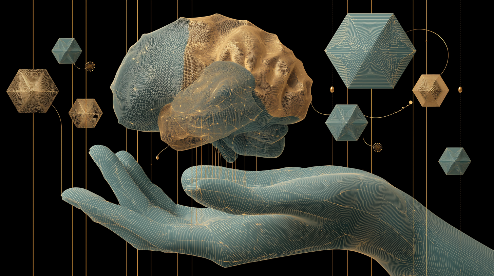

Cognitive Sovereignty and Integrated Inference

Late last year I found myself in Lugano attending Plan B1, Switzerland’s biggest bitcoin conference. It drew thousands — to hear about the future of distributed systems, digital infrastructure, financial autonomy, and above all privacy and preservation of digital liberties. I expected energy grid experts, macroeconomists, computer scientists, quantum cryptographers, as well as a few politicians. I did not expect to hear from neuroscientists building brain-computer interfaces.
Blackrock Neurotech was founded in 2008 by Marcus Gerhardt and Dr Florian Solzbacher. The company’s mission? To restore independence and enrich the lives of individuals with neurological challenges, enabling them to control robotic limbs, navigate digital spaces, and paint with their thoughts. In a fireside chat with Tether CEO Paolo Ardoino, Gerhardt revealed their latest advanced chip, demonstrated what appeared to be the first BCI-enabled bitcoin transaction, and reminded us of Tether’s $200 million investment into the company. But the question remained. Why is Tether, stablecoin issuer and major holder of US treasury bonds, investing in a Brain Computer Interface company?
In recent years, Tether has been expanding beyond their core stablecoin business, investing heavily into decentralised communications infrastructure. Notable investments include:
- Holepunch: A technology platform and company (backed by Tether and Bitfinex) designed for building, hosting, and running decentralized, peer-to-peer applications without relying on centralized servers,
- Keet: A fully encrypted, peer-to-peer video, audio, and text chat application, developed by Holepunch.
- Pear: The underlying P2P framework provided by Holepunch that allows developers to create decentralized apps.
- Rumble: A video-sharing platform that received a $775 million strategic investment from Tether in December 2024 to support expansion and decentralised infrastructure.
- Wallet Development Kit by Tether (WDK): An open-source toolkit designed to enable developers and platforms to integrate self-custodial wallets directly into their apps.
Among these ventures is QVAC2 which, just like the Blackrock Neurotech partnership, was an unexpected appearance at a bitcoin conference. Named after the artificial intelligence from Isaac Asimov’s Foundation series, QVAC is a software development kit built on the P2P frameworks provided by Tether’s other acquisition, Holepunch. Crucially, QVAC is designed to enable developers to build applications that serve local inference, but more importantly to do so in a way that enables distributed inference. Currently, complex inference processes need to be sent to remotely hosted data centres, meaning large inference providers get to see your data. QVAC’s goal is to allow devices to run the inference they can handle locally, and when more powerful inference is required, offload to a trusted device with more capabilities — and potentially, in future, distribute across a network of devices. An SDK designed to put transparency and control over inference front and centre.
In this context, the Blackrock Neurotech partnership makes sense — and not just as a matter of privacy or civil liberties. It is an example of good cognitive systems design.
In a previous post I introduced Heersmink’s cognitive ergonomics framework as an approach for responsible Human-AI interface design. Drawing on Extended Mind Theory (EMT), Heersmink builds on Clark and Chalmers’ observation that extended cognitive processes — those offloaded onto tools, devices, environments — require trust, reliability, and accessibility in order to function as genuine parts of a cognitive system. His framework proposes a set of dimensions of integration: characteristics that describe how tightly an external artefact is woven into an agent’s cognitive life.
Three of these dimensions are directly relevant here. The first is trust — our relationship with the truth value of the information we receive. When we trust information, we accept it as true. When we distrust, we either judge it false or remain uncertain. Crucially, Heersmink notes that trust often operates implicitly: we trust information because we produced it ourselves, or because others rely on it, or because of the authority of its source. In a cognitive system where the information in question is the output of one’s own neural activity — brain waves read, translated, and potentially written back — the question of who processes that information, and whether their handling of it can be trusted, becomes existential rather than merely practical.
The second is security. Heersmink highlights that as cognitive systems become more complex and networked, security becomes a precondition for trust. If an agent suspects that a closely integrated cognitive system has been compromised, the damage extends beyond the immediate breach — it undermines willingness to remain open and integrated at all. A brain-computer interface connected to a centralised inference provider represents precisely this kind of vulnerability: a single point of failure in the most intimate cognitive loop imaginable.
The third is informational transparency — how well the content, internal structure, and generative processes of information are represented and comprehensible to the agent. This is distinct from procedural transparency (ease of action, seamless integration). Both matter, but they can work against each other. Effortless integration must not come at the cost of understanding. When the artefacts in question are outputs derived from one’s own brain activity, processed through opaque inferential systems, the demand for informational transparency is not a nice-to-have. It is a design requirement.
QVAC’s focus on local and delegated inference, and the broader investment in peer-to-peer infrastructure, maps directly onto these dimensions. Local inference means you know where your data is. An open SDK means you can inspect the processes that transform it. A P2P architecture means no centralised point of compromise. What could be worse than outsourcing the processing of one’s own brain waves and foregoing transparency over the nature of the transformation?
Heersmink also highlights that the representational systems we use — the languages, structures, and processes we think through — transform what we are able to think. The architecture of inference is itself a constraint on thought. Controlling that architecture is, in a meaningful sense, controlling what you are able to think. This is what cognitive sovereignty means: not merely keeping your data private, but retaining legibility over the systems that shape your cognition.
It is worth noting, finally, that these ideas were not presented at a cognitive science conference. They were presented at a bitcoin conference. The same instinct that drives communities toward trustless financial systems — the conviction that verification should not depend on faith in a third party — finds new relevance when applied to the design of integrated inferential systems. “Don’t trust, verify” may have begun as a slogan about money. It is increasingly a principle of cognitive design.